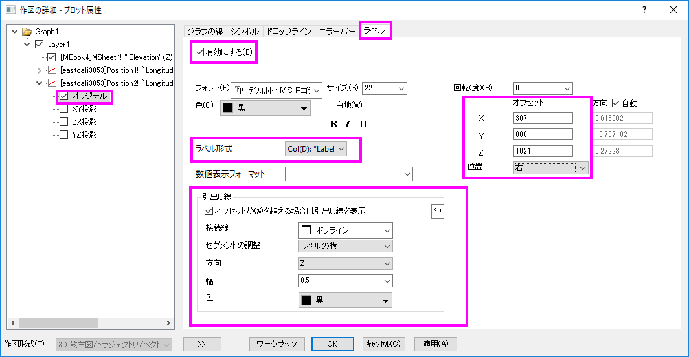

ポイントラベルを追加した3D曲面図
3D-Surface-PointLabel
サマリー
このチュートリアルでは3D散布図を曲面図に追加し、以下のようなラベルを表示する方法を紹介します。

必要なOriginのバージョン: Origin 2015 SR0以降
学習する項目
このチュートリアルでは、以下の項目について説明します。
- 側壁付き3D曲面図を作成する
- 3D散布図を曲面図に追加し、ラベルを表示する
- ラベルの位置を変更する
- シンボルとラベルをつなぐ線を追加する
ステップ
側壁付き3D曲面図を作成する
このチュートリアルは、チュートリアルデータプロジェクト（<Origin EXE フォルダ>\Samples\TutorialData.opj）と関連しています。
また、「ラーニングセンター」からこのグラフを呼び出すことができます。(ヘルプ: ラーニングセンター メニューを選択、または キーボードのF11
キーを押して、グラフサンプル：3D曲面図を選択します)
- Tutorial Data.opjを開き、プロジェクト・エクスプローラ (PE)で3D
Surface with Point Label フォルダを開きます。
- MBook4をアクティブにし、データを全て選択します。メインメニューから作図：3D:3Dカラーマップ曲面を選択します。以下のように、3Dカラーマップ曲面図が作成されます。
- メニューからフォーマット：軸スケール：Z軸を選びます。 軸ダイアログボックスを開きます。（または、グラフ上の軸をダブルクリックして開きます。）Z軸のスケールの値を開始：―500、終了：8000とします。OKをクリックします。
- メニューからフォーマット：プロットを選択し、作図の詳細ダイアログボックスを開きます。（あるいは、グラフ内のどこかでダブルクリックします。）もし、左パネルが表示されていない場合、
 ボタンをクリックしてダイアログを拡張し、Layer1のすぐ下の項目を選択します。側壁を作成して編集するには、側壁タブを開いて有効にするのチェックを付けます。XとYの側壁の色を、それぞれ灰色と明るい灰色に変更します。
ボタンをクリックしてダイアログを拡張し、Layer1のすぐ下の項目を選択します。側壁を作成して編集するには、側壁タブを開いて有効にするのチェックを付けます。XとYの側壁の色を、それぞれ灰色と明るい灰色に変更します。
- 色スケールを調整するには、カラーマップ/等高線タブで、色塗りヘッダをクリックして、ダイアログを開きます。以下のように制限付き混合を選択し、最小値：青、最大値：緑とセットします。OKボタンを押し、塗り方ダイアログを閉じます。
- メッシュタブを開き、主線の色を黒に設定し、適用をクリックします。
- 次に、ライティング効果を追加して編集します。同じ作図の詳細ダイアログで、左側パネルを開いて、Layer 1を選択します。ライティングタブを開いてからモードで平行光源を選択します。位置グループの水平位置には279、垂直位置には-3を入力します。環境光を薄い黄色に設定します。
- 平面を編集するには平面タブを開き、YZとZXボックスのチェックを外してこれら2つの面が表示されないようにします。OKボタンをクリックします。
3D散布図を曲面図に追加し、ラベルを表示する
- ３Dグラフの目的の場所にシンボルを追加するには、メインメニューでグラフ操作：レイヤ内容と操作し、レイヤ内容ダイアログを開きます（あるいは、レイヤの左上にある1アイコンをダブルクリックします）。
表示されるダイアログの左上にあるドロップダウンリストからフォルダ中のワークシートを選択します。
- 以下にあるグラフタイプのボタンをクリックし、３D散布図/ターナリ/ベクトルをグラフタイプとして指定します。
- 左側パネルから右側パネルに内容を移動するには、Ctrlキーを押しながらロングネームにHeightとある行を選択してプロットの追加
 ボタンをクリックします。この操作でレイヤ１に２つの行を追加します。OKボタンをクリックします。
ボタンをクリックします。この操作でレイヤ１に２つの行を追加します。OKボタンをクリックします。
このグラフは3DOpen GLグラフのため、ツールバーの回転ボタンを使用するか、Rキーを押したままマウスを使用すると回転できます。3D曲面に2つの赤いシンボルが追加されて、グラフは下図のようになります。

- ２つのシンボルにラベルを追加するには、どちらかをダブルクリックして作図の詳細ダイアログを開きます。作図の詳細ダイアログの左側パネルで、Position1
プロットレベルの下にあるオリジナルレベルが選択されていることを確認します。ラベルタブで有効にするにチェックを付けます。ラベル形式のドロップダウンリストでcol("Label")をラベルのソースとして選択します。下図のようにラベルのオフセット、位置、引出し線を設定します。
- 左側パネルでPosition2プロットレベルの下にあるオリジナルをクリックします。ラベルタブを開き、上記ステップを繰り返して下図のような設定にします。

OKボタンをクリックします。ラベルおよび引出し線がグラフ上に表示されます。